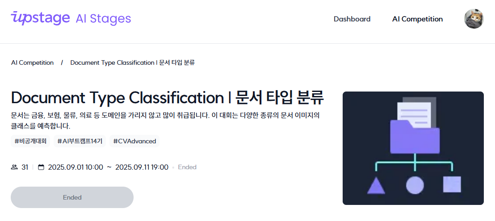

커널 아카데미 AI Lab #009 63–77일차 CV 경진대회
2025.09.12.(FRI)
Computer Vision
63–67일차는 Computer Vision Basic 녹화강의를 수강했다. 68일차부터는 Computer Vision Advanced 녹화강의 수강과 함께 이번 FastCampus 교육과정의 두 번째 경진대회이자 CV 경진대회인 문서 타입 분류 대회가 진행됐다.
대회 소개
이번 대회는 처방전, 자동차 번호판, 주민등록증 등 17가지 범주로 나뉘는 3140개의 이미지를 각각 올바른 카테고리로 분류하는 대회로, 그 진행 기간은 09.01.–09.12.로 2주간이였다. 대회 채점 기준은 Macro F1 score였고, 5명이 한 팀을 이루어 대회에 참여하게 되었다.
EDA/Augmentation
학습에 쓰일 train 데이터는 1,570종류였다. 이번 대회에서 나는 EDA와 데이터 증강(augmentation)을 주로 맡기로 했다. 우선 주어진 데이터 파일들을 확인해 어떤 분포를 보이는지 EDA를 진행했다. 그 결과 학습 데이터는 비교적 깔끔한 이미지로 주어진 반면, 타겟 데이터는 회전, 색조 변경, 자르기 및 가리기, 흐리기 등 심한 노이즈가 삽입되어 있는 것을 알 수 있었다(일부는 사람도 알아보기 힘들 정도였다).
또한 학습 데이터의 절대적인 양이 매우 부족함도 알 수 있었다(타겟 이미지의 수인 3140보다도 적은 1,570장에 불과했다). 이에 나는 이미지를 대상으로 무작위로 회전, 자르기, 가리기, 채도 변경, 명도 변경, 가우시안 흐리기, 임펄스 노이즈 삽입, 컷인 노이즈 삽입, 믹스업 노이즈 삽입을 수행하는 함수들을 작성하고 이를 기반으로 무작위 종류의 무작위 노이즈들을 무작위 강도로 삽입해 새로운 이미지를 생성하는 코드를 작성했으며, 이를 기반으로 추가 데이터를 생성하는 증강을 수행했다.
Modeling/Training
모델은 ResNet 계열, EfficientNet 계열, ConvNeXt 계열을 사용했으며, 점수의 변화를 관찰하며 하이퍼파라미터 튜닝을 진행하여 더 높은 점수를 얻기 위한 최적의 형태로 다듬어 나갔다.
Validation/Prediction
Stratified K-Fold Cross Validation을 사용하여 모델의 성능을 평가하고, 이를 기반으로 한 Early Stopping을 적용하여 최적의 모델을 선택했다.
대회 결과
마지막까지 리더보드 4위를 기록하고 있던 우리 팀은 최종 채점에서 결과를 뒤집으며 6개 팀 중 최종 3위로 대회를 마무리했다. 최종 Macro F1 score는 0.9518이었다.
아쉬웠던 점
대회 후 세미나를 진행하며 다른 팀들과 각자의 작업 내용 및 방식을 공유할 수 있었고, 그 과정에서 개선점을 찾을 수 있었다. 고만고만한 기록이었던 2, 3, 4위와 다르게 1위는 점수의 격차가 조금 있었는데, 1위 팀만의 특별한 점이 있다면 인력을 동원한 심층적인 EDA를 진행했다는 것이다. 1위 팀은 1,570개의 학습 데이터를 전부 확인하며 라벨링이 잘못 된 데이터를 찾아냈다. 어떤 데이터는 잘못 라벨링 되어 있었고, 어떤 데이터는 둘 이상의 카테고리에 라벨링 되있었으며, 심지어 셋 이상의 카테고리에 동시에 라벨링 된 데이터 또한 있었다. 이러한 문제는 모델에 혼동을 일으켜 성능을 악화시키는데, 다른 팀들은 이러한 문제를 알아채지 못 해서 아무리 노력해도 마지막 한 발자국을 더 나아가지 못 했던 것이었다.
소감
아주 상위권에는 들지 못 했지만 나름 만족스러운 결과를 얻었다고 생각한다. 특히 어떻게 하면 학습 데이터가 타겟 데이터와 비슷해지도록 보정할 수 있을까를 고민하며 증강 알고리즘을 작성하고 그 증강을 수행하는 과정에서 큰 즐거움을 느꼈다.